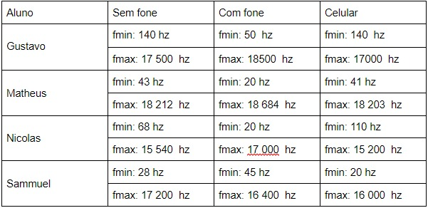
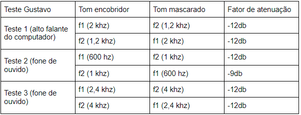
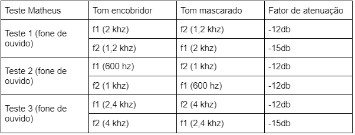
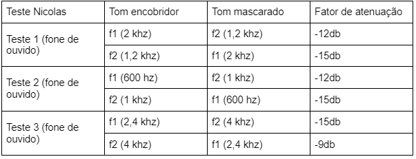
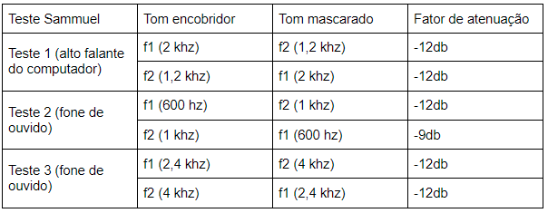

Teste de audiometria sem fone:
Teste de audiometria com fone:
Conclusão: Ocorreram algumas mudanças entre o teste sem fone e com fone de ouvido, os resultados com o fone foram ligeiramente melhores. Acredito que as diferenças tenham ocorrido por conta da calibração e principalmente por conta do ruído externo, a rua em que moro passa muitos carros e ao colocar o fone de ouvido (Headphone) o ruído externo é minimizado.
Teste de audiometria sem fone:
Teste de audiometria com fone:
Conclusão: Os resultados obtidos aparentemente foram melhores sem o fone de ouvido, a possível explicação é uma má calibração feita ao realizar os testes.
Teste de audiometria sem fone:
Teste de audiometria com fone:
Conclusão: Apesar de estar com a porta e as janelas fechadas, o barulho da rua e de minha família ainda pode ser percebido , além disso, o isolamento de meu headfone não é muito bom, já tive fones com isolamento melhor e sei como isso pode fazer uma grande diferença. O hardware e placa de áudio podem ter influenciado na qualidade do som.
Teste de audiometria sem fone:
Teste de audiometria com fone:
Conclusão: Os testes com fone de ouvido foram claramente melhores que usando as caixas de som do notebook. As mudanças entre os testes foram motivadas por causa da baixa qualidade das caixas de som do computador comparadas ao headset, além do ruído sonoro do ambiente (passagem de carros e cachorros latindo). A calibragem também é um fator a ser evidenciado, pois não é feito de forma clara (erro humano envolvido).
Tabela com as frequências mínimas e máximas para o teste 2, referente a cada integrante do grupo 
Conclusão Gustavo: As diferenças neste teste ocorrem principalmente por conta do hardware utilizado, a caixa de som do computador e do celular possuem uma qualidade inferior ao fone de ouvido utilizado, e reproduzem um range menor de frequências. Além disso, como citado no teste anterior, o fone de ouvido tem vantagens ao minimizar a interferência do ruído externo nos testes.
Conclusão Matheus:Os resultados foram muito parecidos em todos os dispositivos, com o fone de ouvido tendo uma leve vantagem sobre o alto-falante do computador e do celular, a possível explicação é um maior espectro de frequências abrangido pelo fone de ouvido.
Conclusão Nicolas: Os testes com fone de ouvido foram claramente melhores que usando as caixas de som do notebook e do celular. A potência das caixas de som do celular foi o que o deixou atrás dos outros aparelhos. Com o Headset tendo um alcance maior de ruídos quando comparado aos outros aparelhos, ele se saiu melhor nos testes.
Conclusão Sammuel: A potência do celular é bem maior do que o áudio do computador, acredito que sejam até 2W de diferença, como ambos possuem tratamento diferentes para o som e o do celular deve ser mais refinado, temos mais uma possível fonte de diferença.
Tabelas do mascaramento de tons harmônicos, cada uma referente a um integrante do grupo    
Teste 1: Os integrantes tiveram resultados semelhantes numa média, tanto com fone quanto sem fone. Os resultados que mais se diferenciaram foram os testes com fone do Sammuel, possivelmente devido a grande qualidade do fone e por uma calibragem errônea; e também o teste sem fone do Matheus, que teve uma grande diferença de colunas no teste, que ocorreu devido ao barulho do ambiente, sendo mais difícil escutar sons mais graves.
Teste 2: Os resultados do teste 2 foram bem parecidos entre os alunos, com pouca variação entre os testes. Os testes que chamam atenção são os testes do aluno Nícolas, que teve a maior variação entre os resultados de frequência máxima, e do aluno Gustavo, que teve as frequências mínimas mais altas, devido a qualidade dos aparelhos de som.
Teste 3: Os resultados do teste 3 foram bem parecidos entre os alunos, e resultados condizentes quando consideradas as idades e estilos de vida dos alunos (usam fones de ouvido fechados diariamente).
A imitanciometria é um exame feito para avaliar as condições do tímpano, dos ossículos da orelha média e da tuba auditiva. O exame consiste em deixar o paciente sentado em um ambiente silencioso, e introduzir uma pequena sonda no canal auditivo do paciente para vedá-lo completamente por pouco tempo. Essa sonda está conectada a um aparelho portátil chamado de imitanciômetro. link da pesquisa
O objetivo do estudo foi avaliar o desempenho em habilidades auditivas e as condições da orelha média em crianças de 4 a 6 anos, para isso, foram utilizados testes de detecção sonora e a Avaliação Simplificada do Processamento Auditivo e as medidas de imitância acústica, em 24,6% das crianças houve a alteração de pelo menos uma habilidade, sendo as crianças mais jovens aquelas com maior ocorrência de alterações de orelha média.link do trabalho